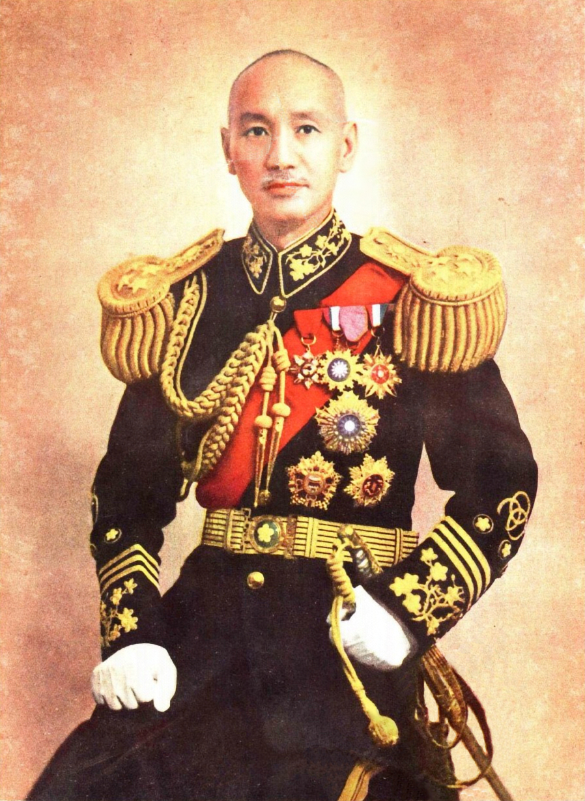

На полях сражений Китае было уничтожено более 1,5 млн японских солдат, или около 70% потерь всего личного состава японских войск, что сыграло решающую роль в уничтожении японских захватчиков, а также внесло значительный вклад в победу мировых антифашистских сил.
